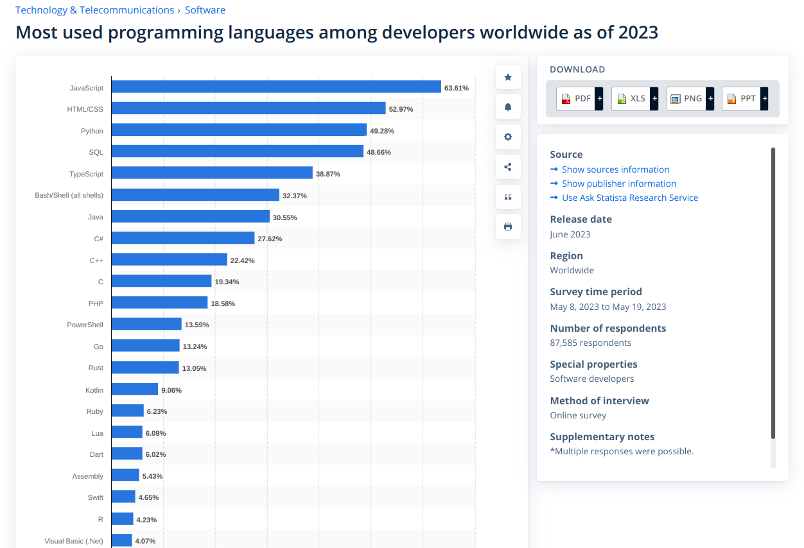
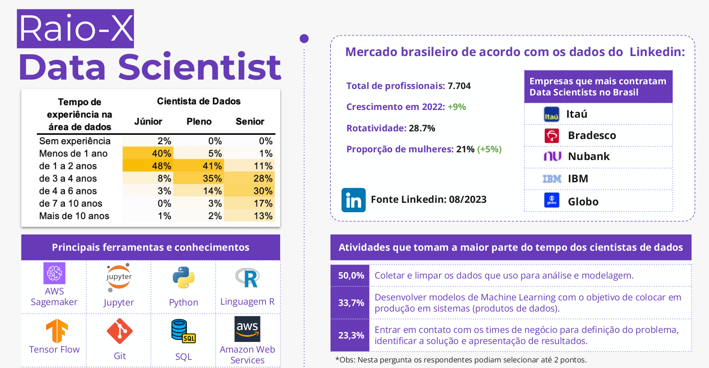
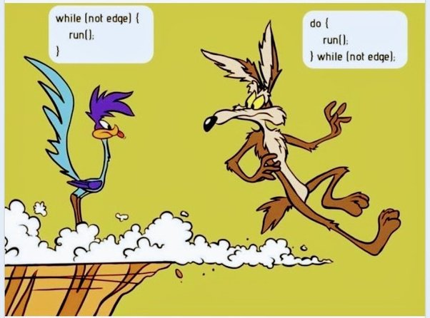

Introdução à Python
UFPE
O que é o Python? O que é o R?

A referência dessa seção foi baseada no livro do ‘Leite, Thiago et al. 2016. Orientação a Objetos: Aprenda Seus Conceitos e Suas Aplicabilidades de Forma Efetiva. Editora Casa do Código.’
Geralmente, utilizamos a programação quando “se precisa automatizar processos do nosso dia a dia”.
Para programarmos, usamos uma linguagem de programação que possibilita informar ao computador como ele deve se comportar para assim conseguirmos automatizar o processo desejado
- Programação de Alto Nível:
Uma linguagem de programação de alto nível disponibiliza comandos (palavras-chaves) bem próximos de uma linguagem natural. Com isso, o processo de “conversar” com o computador é facilitado, pois essas palavras-chaves fornecem uma maior clareza de como se deve orquestrar o que o computador deve fazer por nós.
- Programação de Baixo Nível:
Uma linguagem de programação de baixo nível é mais próxima da linguagem de máquina, ou seja, mais próxima do que o computador entende. Com isso, o processo de “conversar” com o computador é mais difícil, pois é necessário entender como o computador funciona para poder programar. Um exemplo de linguagem de baixo nível é o Assembly, que é uma linguagem de programação que utiliza códigos de máquina para programar.
section .data
msg db 'Hello, World!', 0xA ; Mensagem a ser impressa seguida de nova linha
len equ $ - msg ; Calcula o comprimento da string
section .text
global _start ; Define o ponto de entrada do programa
_start:
mov edx, len ; Define o terceiro argumento: tamanho da mensagem
mov ecx, msg ; Define o segundo argumento: ponteiro para a mensagem
mov ebx, 1 ; Define o primeiro argumento: descritor de arquivo (stdout)
mov eax, 4 ; Define o número da chamada de sistema para sys_write
int 0x80 ; Chama o kernel
mov eax, 1 ; Define o número da chamada de sistema para sys_exit
xor ebx, ebx ; Define o argumento para sys_exit: 0
int 0x80 ; Chama o kernel
Em python, geralmente utilizamos ambientes virtuais para isolar as dependências de um projeto. Isso é útil para que possamos ter diferentes versões de uma mesma biblioteca em projetos diferentes.
O Anaconda é um gerenciador de ambientes virtuais é o mais utilizado nos últimos anos por cientistas, desenvolvedores e engenheiros de dados que utilizam python. A vantagem de utilizar o anaconda é que ele já vem com várias bibliotecas instaladas, o que facilita o trabalho do cientista de dados.
Para fazer o download do Anaconda acesse o link: https://www.anaconda.com/products/distribution e faça o download da versão mais recente para seu sistema operacional.
Alguns comandos são importantes para utilização do Anaconda, como por exemplo:
conda create -n nome_do_ambiente python=3.11.5conda env listconda activate nome_do_ambienteconda deactivateconda env remove -n nome_do_ambienteconda install nome_da_biblioteca, mas geralmente as bibliotecas em python sao utilizando o pip, que é o gerenciador de pacotes do python. Para instalar uma biblioteca utilizando o pip, utilizamos o comando pip install nome_da_biblioteca.Por exemplo, para instalar a biblioteca pandas, utilizamos o comando:
E podemos verificar se a instalação foi bem sucessida, utilizando:
Name: pandas
Version: 1.5.3
Summary: Powerful data structures for data analysis, time series, and statistics
Home-page: https://pandas.pydata.org
Author: The Pandas Development Team
Author-email: pandas-dev@python.org
License: BSD-3-Clause
Location: /home/jodavid/anaconda3/lib/python3.11/site-packages
Requires: numpy, numpy, python-dateutil, pytz
Required-by: altair, datasets, datashader, gradio, holoviews, hvplot, mizani, panel, plotnine, seaborn, statsmodels, sweetviz, TTS, xarrayTambém conhecidos como bibliotecas, os módulos são arquivos que contém funções, variáveis e classes que podem ser utilizadas em outros programas.
Para utilizar um módulo em python, utilizamos o comando import nome_do_modulo. Caso deseje utilizar apenas uma função específica de um módulo, utilizamos o comando from nome_do_modulo import nome_da_funcao.
Como por exemplo, utilizando o modulo math:
Acima o math é o módulo e sqrt é a função que calcula a raiz quadrada de um número.
pandas é comumente abreviado como pd, o módulo numpy é abreviado como np, o módulo matplotlib é abreviado como plt, entre outros.Vale uma observação é que essas abreviações elas são abraçadas pela comunidade, ou seja, não é uma regra, mas existe uma boa prática de por exemplo, abreviar o pandas como pd, o numpy como np, o matplotlib como plt, e existe isso para várias outras bibliotecas.
Também existe o caso de você explicitar as funções que desejas nos módulos, com o intuito de usar diretamente o nome da função, sem a necessidade de chamar o módulo. Por exemplo, ao invés de utilizar math.sqrt(25), você pode utilizar from math import sqrt e depois utilizar sqrt(25).
Note que a função
sqrtfoi importada diretamente do módulomath, e por isso não é necessário chamar o módulo para utilizá-la, ou seja, se a função não for utilizada como na forma acima, e utilizar oimport mathé necessário utilizar omath.sqrt(25)para obter o resultado, informando que a funçãosqrtpertence ao módulomath.
from math import sqrt, você pode utilizar from math import sqrt as raiz_quadrada, e depois utilizar raiz_quadrada(25) para obter o resultado. Isso é útil quando a função importada possui um nome muito grande, ou quando o nome da função importada é muito comum e pode gerar confusão com outras funções. Então, um exemplo para esse caso é:
# Exemplo de condicional
x = 10
if x > 5:
print("x é maior que 5")
else:
print("x é menor ou igual a 5")x é maior que 5if e do else está indentado, ou seja, está com um espaço a mais em relação ao bloco de código que está fora do if e do else. Isso é necessário para que o python entenda que o bloco de código está dentro do if e do else.Quando o laço é utilizando for e while, a indentação também é necessária para delimitar o bloco de código que está dentro do laço.
Uma observação importante, é que diferente da linguagem
Ro python inicia sua indexação em 0, ou seja, o primeiro elemento de uma lista, por exemplo, é o elemento 0, o segundo elemento é o elemento 1, e assim por diante. NoRa indexação inicia em 1.
for. Isso é muito útil quando você deseja acessar o índice e o valor de um elemento da lista.for. Isso é muito útil quando você deseja acessar o índice e o valor de um elemento da lista.enumerate para acessar o índice e o valor de um elemento da lista.# Exemplo de laço for com acesso ao índice e ao valor
lista = [10, 20, 30, 40, 50]
for i, valor in enumerate(lista):
print(f"O elemento {i} da lista é {valor}")O elemento 0 da lista é 10
O elemento 1 da lista é 20
O elemento 2 da lista é 30
O elemento 3 da lista é 40
O elemento 4 da lista é 50Em python, as funções são criadas utilizando a palavra-chave def, seguida pelo nome da função, seguida por parênteses, seguida por dois pontos. O bloco de código que está dentro da função é indentado, ou seja, está com um espaço a mais em relação ao bloco de código que está fora da função.
Para chamar a função, basta utilizar o nome da função seguido por parênteses.
Como boas práticas de programação, é interessante que as funções possuam argumentos e docstring, ou seja, parâmetros que são passados para a função e dentro da função um cabeçalho indicando o que cada argumento representa, respectivamente. Isso torna a função mais flexível e mais útil.
Um exemplo de função com argumentos e docstring é:
No exemplo acima, a função saudacao possui dois argumentos, nome e saudacao, onde nome é obrigatório e saudacao é opcional, pois possui um valor padrão. Além disso, a função possui um cabeçalho que indica o que cada argumento representa.
Também existe em python as chamdas funções anônimas ou funções lambda, que são funções que não possuem um nome, e são utilizadas para criar funções simples e rápidas.
E o interessante é que as funções lambda podem ser utilizadas em conjunto com as funções map, filter e reduce para realizar operações em listas.
É possível também atribuir funções lambda a variáveis, como no exemplo abaixo:
Entretanto, a maioria das pessoas vão preferir e lhe dizer para usar a função def ao invés da função lambda, pois a função def é mais legível e mais fácil de entender.
Como por exemplo:
As strings podem ser demilitadas por aspas simples ou duplas, e podem ser acessadas como listas, ou seja, é possível acessar cada caractere da string utilizando a indexação.
# Exemplo de string
single_quoted_string = 'data science'
double_quoted_string = "data science"
single_quoted_string == double_quoted_stringTrueO python usa barra invertida para codificar caracteres especiais. Por exemplo, para incluir uma aspa simples em uma string delimitada por aspas simples, você deve usar \'.
Também é possível criar strings múltiplas linhas utilizando três aspas simples ou duplas.
# Exemplo de string com múltiplas linhas
multi_line_string = """Esta é a primeira linha.
e esta é a segunda linha
e esta é a terceira linha"""
print(multi_line_string)Esta é a primeira linha.
e esta é a segunda linha
e esta é a terceira linhaO python também possui uma série de funções para manipular strings, como por exemplo, a função split que divide uma string em uma lista de substrings.
As listas são uma das estruturas de dados mais importantes do python. Elas são similares aos vetores em outras linguagens, como por exemplo na linguagem R^[No R,tipos diferentes no vetor ele converte para character, por exemplo vetor <-c("a",1,TRUE), entretanto, são mais flexíveis. Elas são mais flexíveis, pois podem armazenar qualquer tipo de dado, e não são limitadas a um único tipo de dado.
Você pode acessar ou modificar o i-ésimo elemento de uma lista utilizando colchetes.
Além disso, o python possui uma sintaxe de corte que permite acessar múltiplos elementos de uma lista.
Um operação interessante é utilizando o operator in para verificar se um elemento está contido em uma lista.
OBS.: Essa operação é muito mais lenta em listas do que em dicionários e conjuntos, pois o python faz uma busca linear em listas, ou seja, verifica os elementos da lista um de cadas vez, sendo assim a verificação em um conjunto ou dicionário é muito rápido. Vamos estudar consjuntos e dicionários mais a frente.
Com listas, também podemos concatenar, ou seja, adicionar mais informações a lista, e isso pode ser feito de várias formas, como adição de elementos a lista, junção de várias listas, ou multiplicação de listas. Abaixo segue exemplos de como fazer isso.
Chegamos a Tuplas, e o que seria isso? Tuplas são muito parecidas com listas, mas com uma diferença fundamental, elas são imutáveis, ou seja, uma vez que você cria uma tupla, você não pode adicionar, remover ou modificar elementos dela. Tuplas são geralmente utilizadas para funções que retornam múltiplos valores. Vamos a exemplos:
Um outro exemplo:
# Exemplo de tuplas
def sum_and_product(x, y):
return (x + y), (x * y)
sp = sum_and_product(2, 3)
s, p = sum_and_product(5, 10)
print(sp)(5, 6)1550As tuplas (e listas) podem ser usadas para atribuições múltiplas, o que é muito útil para trocar valores de variáveis.
Outra estrutura fundamental é o dicionário, que é uma coleção de pares chave-valor, onde as chaves devem ser únicas. Dicionários são como listas, mas mais gerais, pois você pode indexá-los com qualquer tipo imutável, não apenas inteiros. Vamos a exemplos:
# Exemplo de atribuição de valores
grades["Tim"] = 99
grades["Kate"] = 100
num_students = len(grades)
print(grades){'Joel': 80, 'Tim': 99, 'Kate': 100}3Dicionários são muito utilizados para contadores, ou seja, para contar a frequência de ocorrência de elementos em uma lista. Vamos a um exemplo:
Frequentemente usamos dicionários para representar dados “semi-estruturados”. Por exemplo, poderíamos ter um dicionário por usuário em uma rede social, onde as chaves são os nomes das colunas e os valores são os dados do usuário. Por exemplo:
# Exemplo de dicionários semi-estruturados
tweet = {
"user" : "joelgrus",
"text" : "Data Science.",
"retweet_count" : 100,
"hashtags" : ["#data", "#science", "#datascience", "#bigdata"]
}
print(tweet){'user': 'joelgrus', 'text': 'Data Science.', 'retweet_count': 100, 'hashtags': ['#data', '#science', '#datascience', '#bigdata']}Além de procurar por chaves específicas, podemos olhar para todas elas. Por exemplo:
# Exemplo de chaves e valores
tweet_keys = tweet.keys()
tweet_values = tweet.values()
tweet_items = tweet.items()
print(tweet_keys)dict_keys(['user', 'text', 'retweet_count', 'hashtags'])dict_values(['joelgrus', 'Data Science.', 100, ['#data', '#science', '#datascience', '#bigdata']])dict_items([('user', 'joelgrus'), ('text', 'Data Science.'), ('retweet_count', 100), ('hashtags', ['#data', '#science', '#datascience', '#bigdata'])])As chaves dos dicionários devem ser imutáveis, o que significa que podemos usar strings, números ou tuplas como chaves, mas não listas. Por exemplo:
Conjuntos são uma outra estrutura de dados em Python. Um conjunto é uma coleção de elementos distintos, ou seja, não há repetição de elementos. Os conjuntos em python são similares aos conjuntos em matemática e utilizam a função set() para criá-los. Vamos a exemplos:
Conjuntos são muito úteis para verificar a existência de elementos distintos em uma coleção1. Por exemplo, podemos verificar a existência de palavras distintas em um texto. Vamos a um exemplo:
OBRIGADO!
Slide produzido com quarto
Redes Neurais - Prof. Jodavid Ferreira